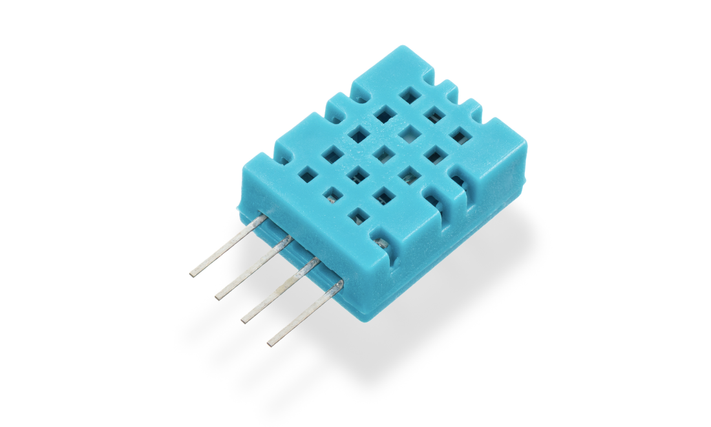
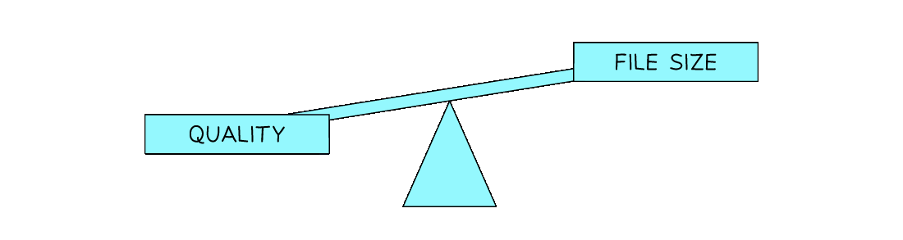
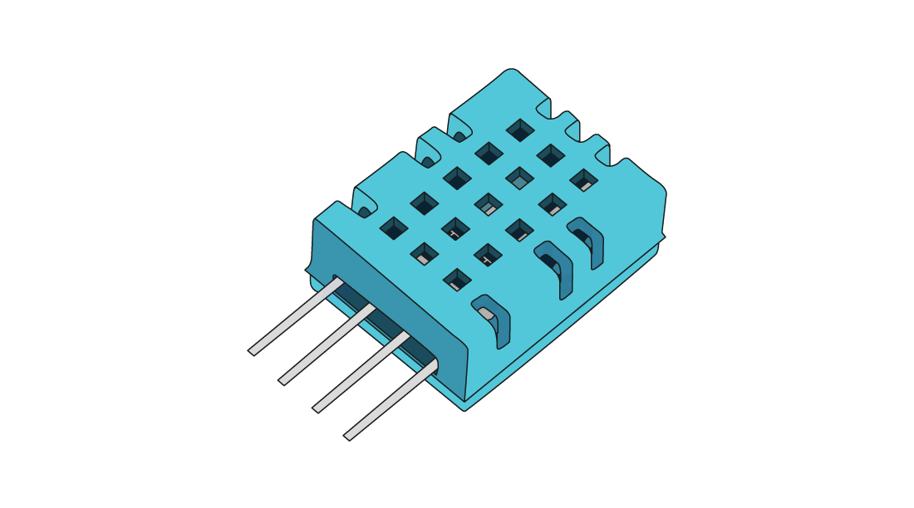
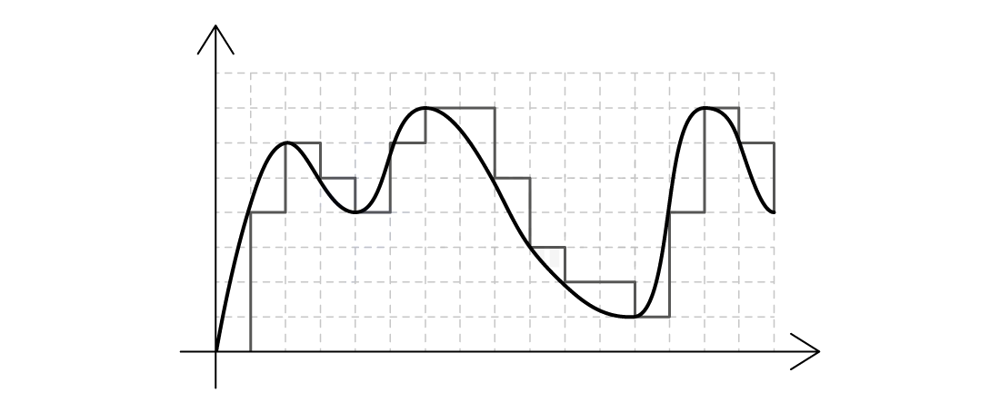
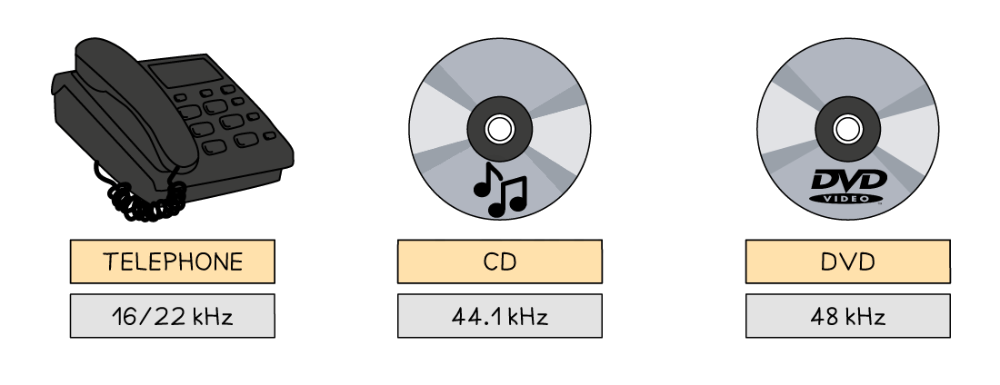
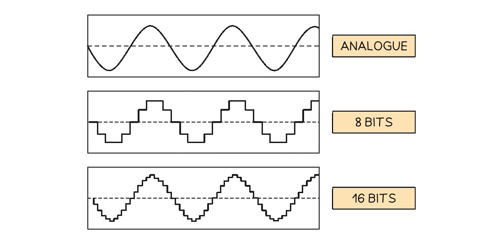

Bitmap Images
Bitmap encoding
What is a bitmap?
- A bitmap image is made up of squares called pixels
- A pixel is the smallest element of a bitmap image
- Each pixel is stored as a binary code
- Binary codes are unique to the colour in each pixel
-
A typical example of a bitmap image is a photograph

Humidity sensor bitmap image -
The more colours and more detail in the image, the higher the quality of the image and the more binary that needs to be stored
Image vs screen resolution
- Image resolution is the total amount of pixels that make up a bitmap image
- The image resolution is calculated by multiplying the height and width of the image (in pixels)
- In general, the higher the resolution the more detail in the image (higher quality)
- Screen resolution refers to the total amount of pixels horizontally in a display, such as:
- Computer monitors - 1440p means 1440 pixels horizontally compared to 4K which is 3840 pixels (roughly 4 thousand)
- TVs - HD (high definition) televisions have a screen resolution of 1080p, 1080 pixels horizontally compared to newer 4K televisions with 3840 pixels
- YouTube - The quality button allows a user to change the video playback resolution from 144p (144 pixels horizontally) up to 4K
- Another consideration of screen resolution is the physical size of the of the display
- The number of pixels per square inch (PPI) is known as pixel density
- Pixel density can mean images to need to be scaled up or down to fit, sometimes causing loss in quality
- A consumer purchases a new 65” 4k television
- The screen resolution is 3840 x 2160
- To calculate the pixel density of the screen we add together the squares of the resolution
- (3840 2 + 2160 2) = (14 745 600 + 4 665 600) = 19 411 200
- Find the square root ( = 4405.814)
- Divide by the screen size (4405.814 / 65 = 68)
- The television has a pixel density of 68 pixels per inch (PPI)
- Watching 4K content from a normal viewing distance means the image will appear crisp and sharp
- However, if you sit too close, you may start to see:
- The pixel grid
- A loss of fine detail
- Modern smartphones have very high screen resolutions in much smaller screens
- This gives them a much higher PPI, often over 300 PPI
- This means they can be viewed up close without losing quality or seeing pixelation
Colour/bit depth
- Colour depth is the number of bits stored per pixel in a bitmap image
- The colour depth is dependent on the number of colours needed in the image
- In general, the higher the colour depth the more detail in the image (higher quality)
-
In a black & white image the colour depth would be 1, meaning 1 bit is enough to create a unique binary code for each colour in the image (1=white, 0=black)
-
In an image with a colour depth of 2, you would have 00, 01, 10 & 11 available binary codes, so 4 colours
-
As colour depth increases, so does the amount of colours available in an image
- Colour depth can also refer to the number of colours that can be represented in an image
- It is calculated using the formula:
- Colour depth = 2 n (where n = number of bits)
| Colour/bit depth | Number of colours | Example |
|---|---|---|
| 1 bit | 2 1 = 1 | B&W |
| 2 bit | 2 2 = 4 | Icons/logos |
| 4 bit | 2 4 = 16 | Early computer graphics |
| 8 bit | 2 8 = 256 | GIFs, retro games |
| 24 bit (True colour) | 2 24 = 16 777 216 | High-quality images |
Calculating the size of a bitmap file
How do you calculate the size of a bitmap image?
- Estimating the size of a bitmap image can be carried out with the following formula:
- Resolution x colour/bit depth
Example
Image Files (Resolution) x (Colour Depth)
| Size of bitmap image = | ||
|---|---|---|
| Resolution | 250,000 | Resolution = width x height |
| Colour depth | 24 bits | 24 bits = 3 bytes |
| 250,000 x 24 | = (bit to bytes) /8 (bytes to KiB) /1024 or (bytes to KB) /1000 |
6,000,000 bits 750,000 bytes 732 KiB or 750 KB |
| 250000 x 3 | = (bytes to KiB) /1024 or (bytes to KB) /1000 |
750,000 bytes 732 KiB or 750 KB |
- When bitmap images are saved, a file header is created
- This contains:
- File type (.bmp or.jpg)
- File size
- Image resolution
- Colour depth
- Any type of compression if used
Image quality & file size
What is the relationship between image quality and file size?
- As the resolution and/or colour depth increases, the bigger the size of the file becomes on secondary storage
- The higher the resolution, the more pixels are in the image, the more bits are stored
- The higher the colour depth, the more bits per pixel are stored
- Striking a balance between quality and file size is always a consideration
- Compression can be used on high quality images to help reduce the file size

Vector graphics
What is a vector graphic?
- A vector graphic is created from mathematical equations and points
- Only the mathematics used to create the image are stored
- For example, to create a circle the data stored would be:
- Centre point (x, y coordinates)
- Radius
-
Typical examples of vector images are logos and clipart

-
Vector images are infinitely scalable
- Ideal for situations where the same image will be made bigger and smaller and a loss of quality is unacceptable
- For example, the same logo used on both a pencil and a billboard
- A vector graphic contains a drawing list (included in the file header)
- A typical drawing list will contain:
- Commands used to create each object in the image
- Attributes that define the properties of each object
- Relative position of each object
- Dimensions of the image are not defined, meaning scaling up does not result in a loss of quality
Bitmap vs vector
| Feature | Bitmap Images | Vector Images |
|---|---|---|
| Made from | Pixels (tiny coloured squares) | Shapes and lines using maths (vectors) |
| File size | Larger (depends on resolution) | Smaller (uses formulas, not pixels) |
| Scalability | Loses quality when resized (pixelates) | Can be resized without losing quality |
| Best for | Photographs, detailed images | Logos, icons, text graphics |
| Editable with | Paint software (e.g. Photoshop, GIMP) | Drawing software (e.g. Illustrator, Inkscape) |
| Common file types | .jpg,.png,.bmp,.gif | .svg,.ai,.eps |
- When choosing to use a bitmap or vector based image, the following should be considered:
- Does the image need to be resized?
- Does the image need to be drawn to scale?
- Does the image need to look real?
Sound Representation
Sound encoding
How is sound encoded in a computer system?
- Computers represent all data in binary, including sound that we record using a microphone (input) or sound that we playback from a speaker (output)
- For this to happen, analogue sound must be sampled and stored
Analogue sound
- Sound waves begin as analogue and for a computer system to understand them they must be converted into a digital form
- Measurements of the original sound wave are captured and stored as binary on secondary storage
- This process is called Analogue to Digital conversion (A2D)
- The process begins by measuring the loudness (amplitude) of the analogue sound wave at a point in time, this is called sampling
- The higher the amplitude, the louder the sound
- Each measurement (sample) generates a value which can be represented in binary and stored
- Using the samples, a computer is able to create a digital version of the original analogue wave
-
The digital wave is stored on secondary storage and can be played back at any time by reversing the process

-
In this example, the grey line represents the digital wave that has been created by taking samples of the original analogue wave
- In order for the digital wave to look more like the analogue wave (black line) the sampling rate, sampling resolution and sample interval can be changed
Sampling rate vs sampling resolution
Sampling rate
- The sampling rate is the amount of samples taken per second of the analogue wave
- Samples are taken for the duration of the sound
- The sampling rate is measured in Hertz (Hz)
-
1 Hertz is equal to 1 sample of the sound wave

-
The sample rate of a typical audio CD is 44.1kHz (44,100 Hertz or 44,100 samples per second), a sampling resolution of 16 bits and is recorded in stereo sound
- Using the graphic above to compare common sampling rates, the question, “ Why does telephone hold music sound so bad?” can now be answered
Sampling resolution
- Sampling resolution is the number of bits used to represent each sound sample
-
Sampling resolution is closely related to the bit depth of a bitmap image, they measure the same thing in different contexts

-
In the example above, the higher the sample resolution, the closer to the original sound wave the digital version looks
Impact of sampling settings
What are the impacts of sampling settings?
| Factor | Effect of playback quality | Effect on file size |
|---|---|---|
| Sampling rate | ⬆️ higher = more detail, better sound quality | ⬆️ higher = more data, larger file size |
| Sampling resolution | ⬆️ higher = bigger range, better sound quality | ⬆️ higher = more data per sample, larger file size |